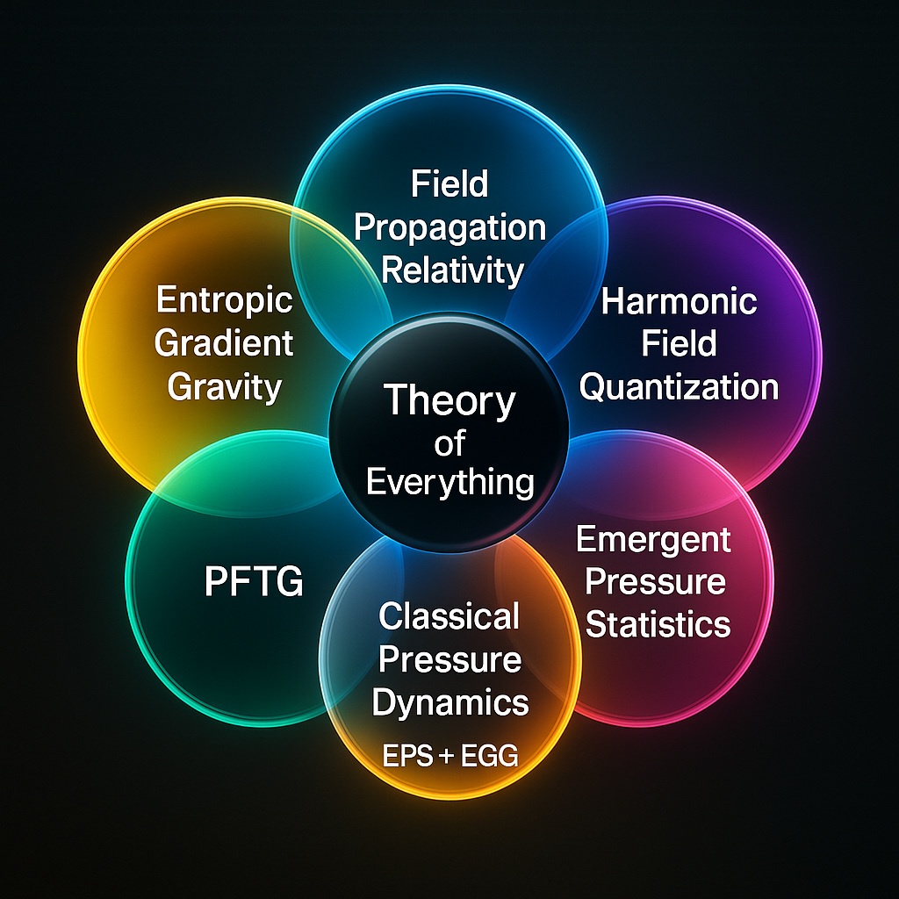
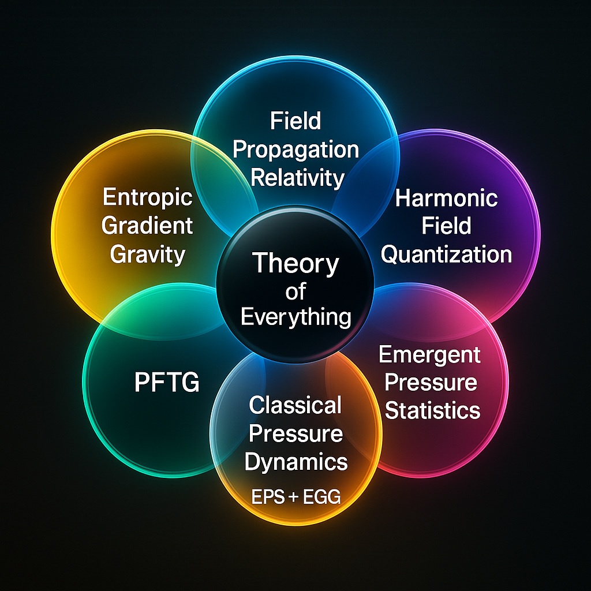

The Pressure-Field Theory of Gravity
A Field-Based Theory of Everything — From Minimal Relic to FIRE-G Split

A Field-Based Theory of Everything — From Minimal Relic to FIRE-G Split
The development of these frameworks begins with a common gravity foundation and then branches into distinct paths — a conceptual "Y split" evolution. From the Gravity Base, two primary directions emerge: PFTG (Pressure-Field Theory of Gravity), focused on mechanical pressure gradients in flat spacetime, and FIRE-G, centered on entropy gradients in curved spacetime. Each further evolves into a full Theory of Everything (TOE) variant.
PFTG MinimalRelic focuses purely on pressure field gravity without full gauge or quantum integration, remaining practical and directly testable. PFTG TOE extends this by introducing harmonic gauge modes and soliton-based particle models, pushing toward a unified field-based TOE in flat 4D spacetime.
FIRE-G Gravity offers an entropy-driven reinterpretation of gravity alone, providing a conservative alternative to general relativity using entropy gradients. Finally, FIRE-G TOE expands this entropy foundation to include gauge forces (via harmonic entropy modes) and topological entropy knots as particles, forming a bold, fully unified theoretical vision in curved spacetime.
This split can be envisioned as:
Gravity Base
│
┌─────────────┴─────────────┐
PFTG (Pressure) FIRE-G (Entropy)
│ │
TOE Expansion TOE Expansion
Main differences at a glance:
.png)
.png)
 Mode (Strong Force).png)
.png)


This work presents two parallel theoretical approaches aiming toward a unified field-based understanding of gravity and fundamental interactions. The Pressure-Field Theory of Gravity (PFTG) models gravity as emerging from mechanical pressure gradients, offering an alternative to curvature-based General Relativity and opening a path toward unification via soliton wavepackets and harmonic gauge analogs. Meanwhile, the FIRE-G framework diverges to explore entropy gradients as the universal driver, using thermodynamic and information-theoretic principles to unify gravity, particle-like entropy knots, and gauge analogs, while providing a natural connection to quantum behavior through entropy fluctuations. Together, these approaches illustrate a conceptual "Y split," each contributing valuable insights on the road to a potential Theory of Everything.
If you use or reference this work, please cite the following:
@article{harper2025pftg,
title = {The Pressure-Field Theory of Gravity: Toward a Field-Based Theory of Everything},
author = {Harper, Joey},
year = {2025},
publisher = {Zenodo},
doi = {10.5281/zenodo.15765687},
url = {https://doi.org/10.5281/zenodo.15765687}
}This work is licensed under the Creative Commons Attribution 4.0 International License (CC BY 4.0).